Widget
Overview

After Effects clips — choose a video from the list on the right.
Clips · A-Z
Freelance motion and promotional video work — select the image to open the media player.
I’m an illustrator & motion graphic designer studying digital design. My goal is to combine the skills I’ve attained with the new skills I’m learning in university — designing user interfaces in today’s modern era that not only engage but also connect with the user on an emotional level to bring the best user experience possible.
My strongest work sits where graphic art, illustration, and animation meet. I’m especially drawn to bold character-led visuals, expressive composition, motion timing, and design that creates an immediate emotional connection. I’m keen to keep learning across digital design, UI, branding, and motion graphics so I can keep developing work that feels polished, purposeful, and visually memorable.
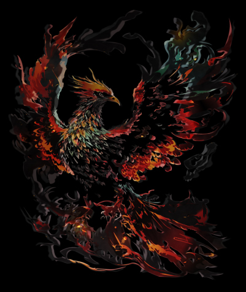
“I love the graphic medium in all its forms. My passion is with animation and illustration but making user interfaces better and easier with these skills is where the magic happens.”
Most Recent
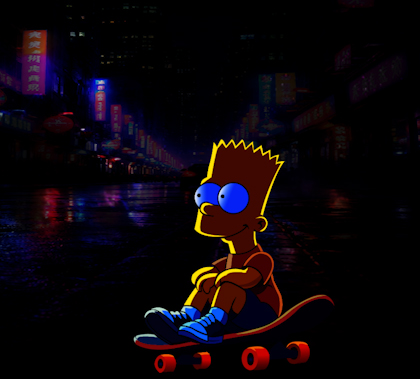
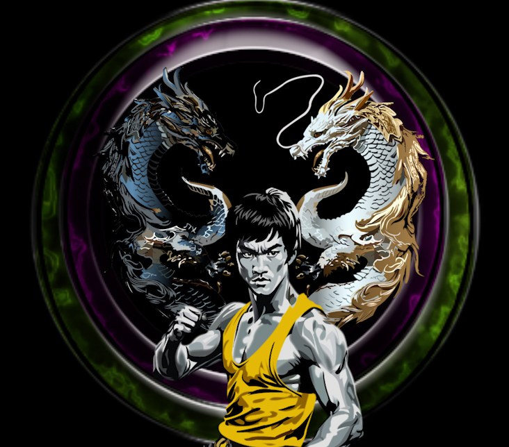
Other Projects
For tablet & web
Smarthome 2076
This was a design project designed for an elderly person 50 years from now. The user is essentially living in an empty room with moving furniture and lighting capabilities built into the walls and floor. With the dashboard I created with HTML & JavaScript with the help of Cursor.
The user has full control over which room and configuration they would like this space to be. It also comes with an AI assistant to adjust the temperature, give updates on the security, and the power outage he would be using.
Coffee Dashboard
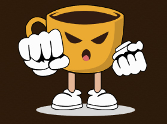
The art of information. This project was created entirely in Figma. It explains through charts and graphs the correlation between the amount of coffee I consumed over a week with the amount of Uni work I got done.
Graphic Design
Blender
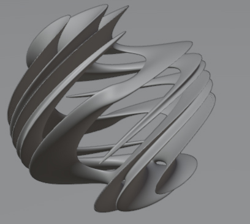
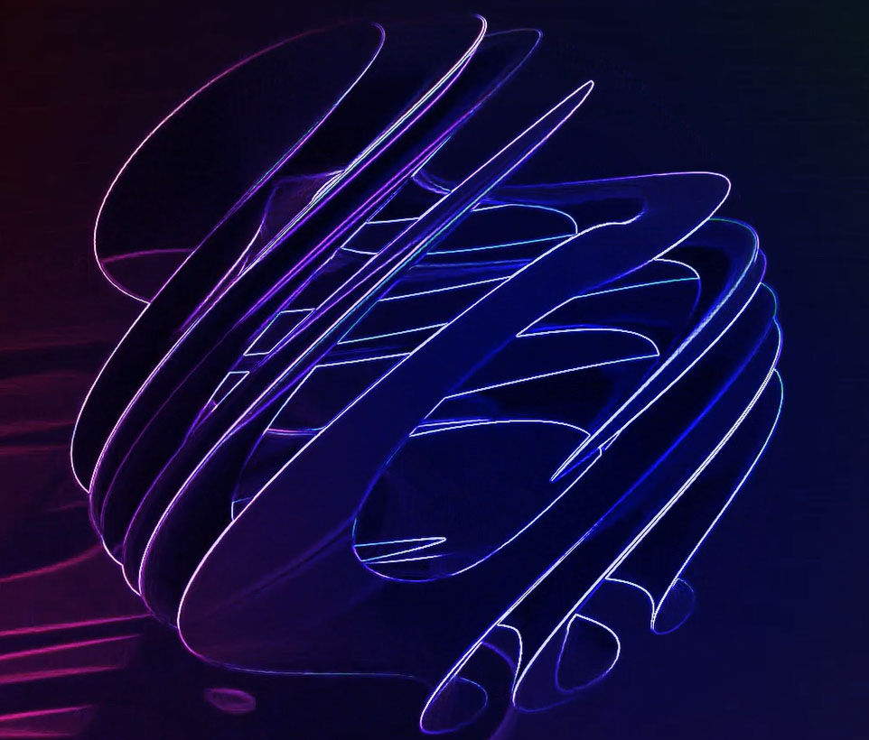
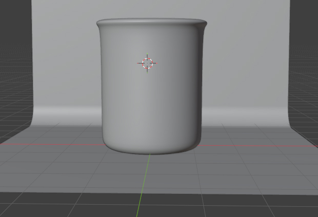
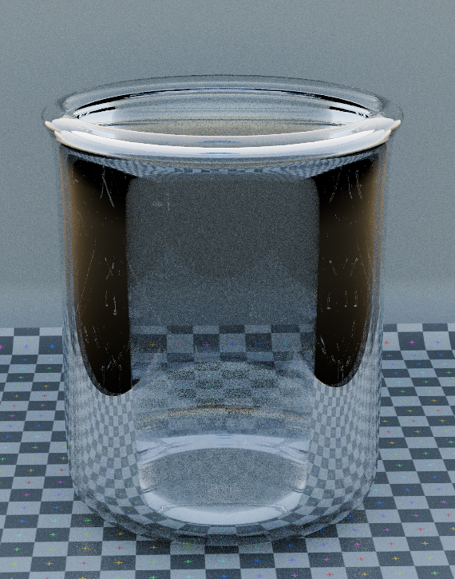
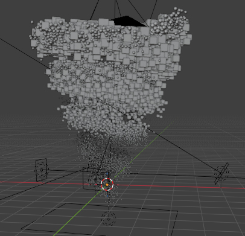
Vortex Blender render and top view render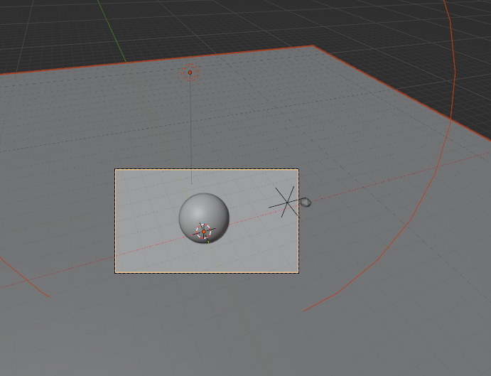

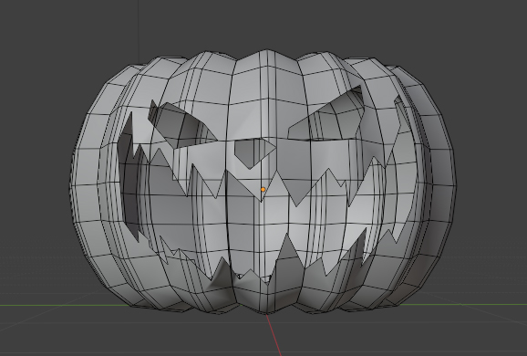
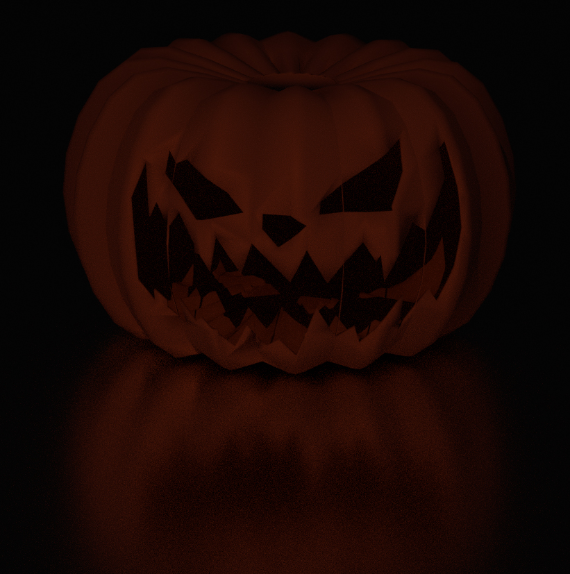
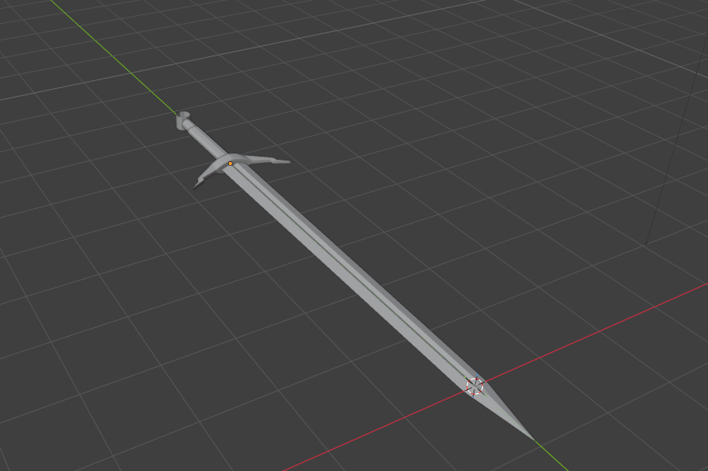
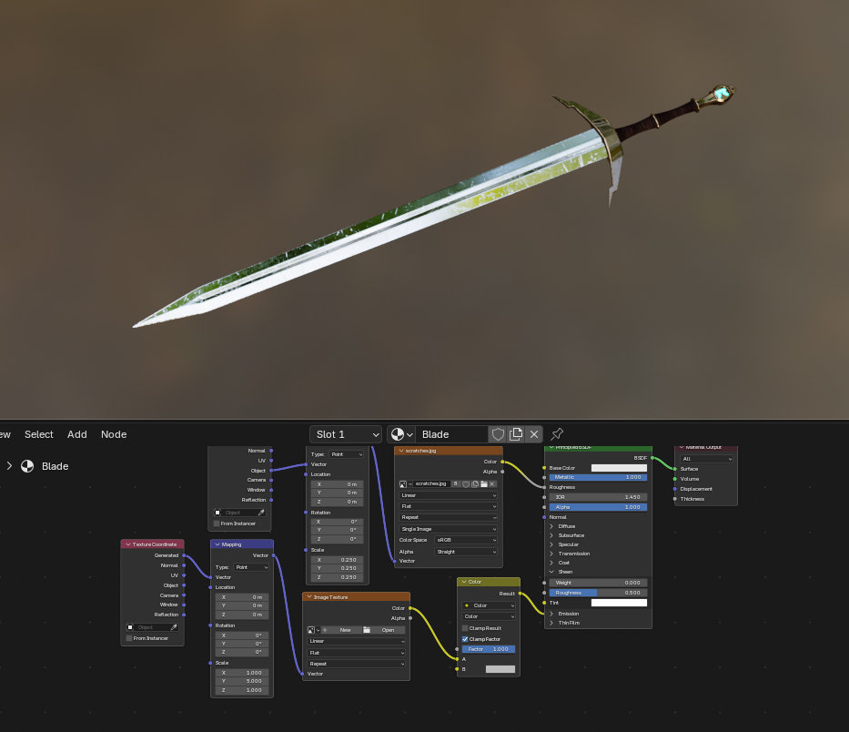

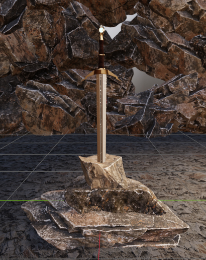
“Learning & knowledge is the real power. If you work hard and truly believe, you can accomplish anything.”
Blog & socials

Work placements · Freelance clients